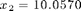

Understanding your data
Contents
Assuming you are measuring a quantity by times, each measurement is labeled by , , ..., .
Using MATLAB on data analysis
Though MATLAB provides a lot of handy functions for you to avoid typing complicated equations by hand, you still need to organize your data in the way that MATLAB can read. The most convenient way is using vectors to store your measurements. For example, remind yourself how to construct a vector x which contains five measurements of the quantity :
x
x =
9.5717 10.0570 10.3719 9.7136 9.9934
where , , ....
The total number of measurements is just the length of vector x:
length(x)
ans =
5
Therefore, in this example.
Summation and Average
The best answer is then calculated by adding all values and dividing that sum by the number of measurements:
,
which is the same as the average value of x. In MATLAB, instead of typing x(1)+x(2)+..., you can use the internal function sum:
sum(x)
ans = 49.7076
and the average value is
sum(x)/length(x)
ans =
9.9415
Actually, MATLAB provides another internal function mean to quickly calculate the mean value of a vector:
mean(x)
ans =
9.9415
Standard deviation
The standard deviation of your measurements basically tells you how well your data agree with each other and the mean:
.
The smaller the value, the less error in your individual measurements. Despite the long equation, in MATLAB simply type
std(x)
ans =
0.3122